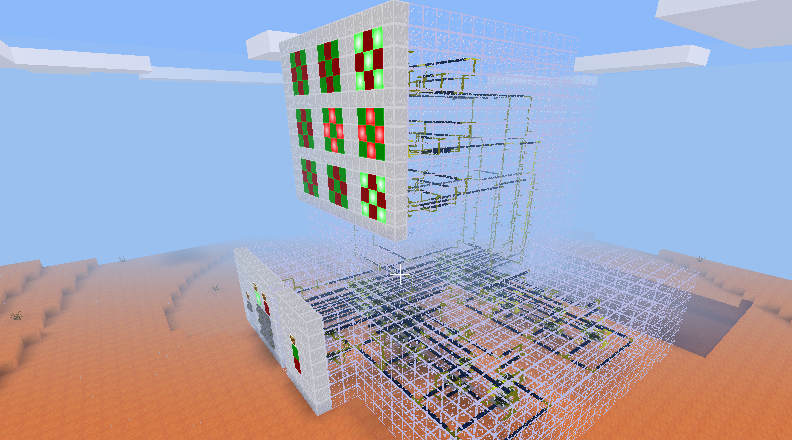
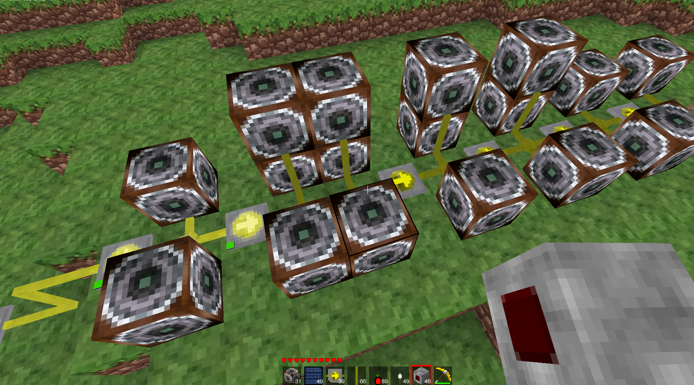
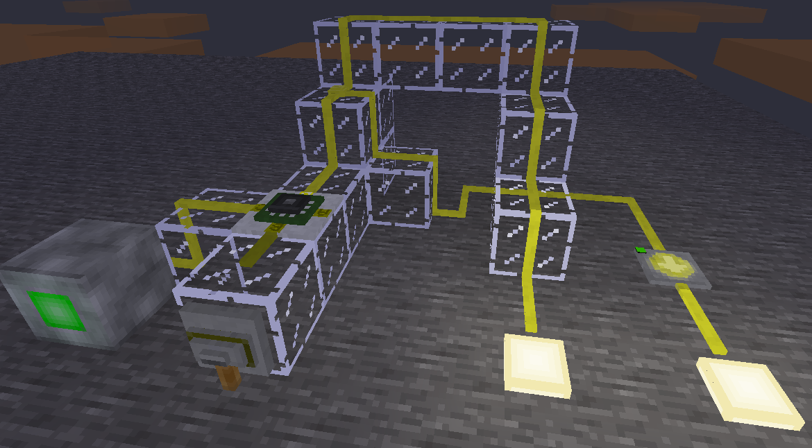
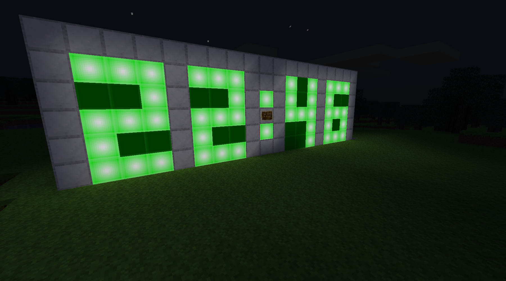
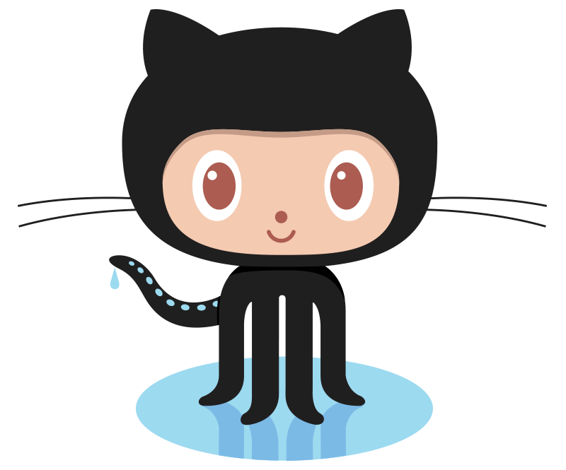

Mesecons is a mod for the free, open source game Minetest. Mesecons adds everything digital, from all kinds of sensors, switches, solar panels, detectors, pistons, lamps, sound blocks to advanced digital circuitry like logic gates and programmable blocks.
If you have mesecon machines you built yourself, please send them in! Here is just a small selection of projects that were made with mesecons - if you want to see more, just visit your favorite minetest creative server to see many more astonishing builds.




Learn more about Mesecons
If you already know about Minecraft's redstone, you will also be familiar with mesecons. Mesecons are not just redstone though - they share some similarities, but are also way more powerful than redstone thanks to programmable blocks such as the Luacontroller, logic gates and different kinds of sensors. If you don't have any prior experiences with mesecons, redstone or digital circuitry, I absolutely recommend you to check out Uberi's Mesecons Laboratory.
Mesecons is developed at GitHub

Mesecons is a collaborative free and open source software project developed at GitHub. It is easy to tinker with and provides an interface for your own mods. If you find any bugs or problems, please report them on GitHub's issue tracker and send in your own ideas or patches as pull requests!